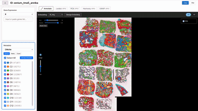
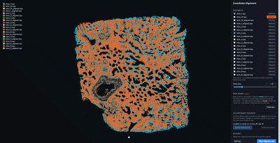
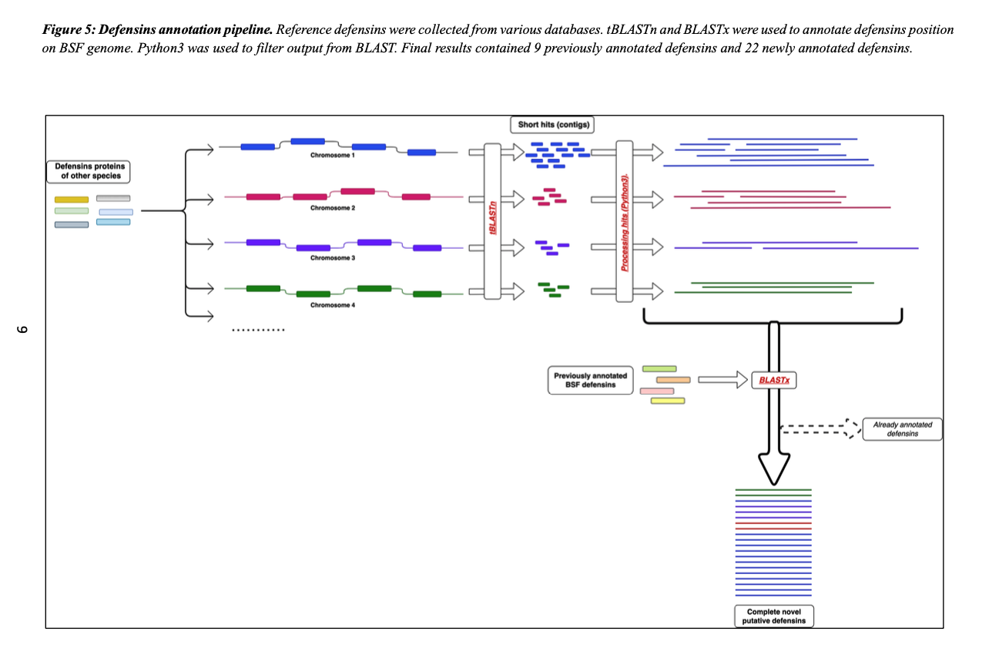

Single-cell analysis toolkit
A set of tools for exploring and analyzing single-cell data.
Tools, packages, and pipelines I've built for single-cell and genomics work.

A set of tools for exploring and analyzing single-cell data.

An interactive tool for adjusting and aligning imaging data.

An open-source package for processing, analyzing, and visualizing single-cell clonotypes (scTCR/BCR).

A Python pipeline that annotates genes across species using tBLASTn and BLASTx. Built for my B.Sc. thesis to identify defensins in the Black Soldier Fly — recovering 9 previously annotated and 22 novel putative defensins.